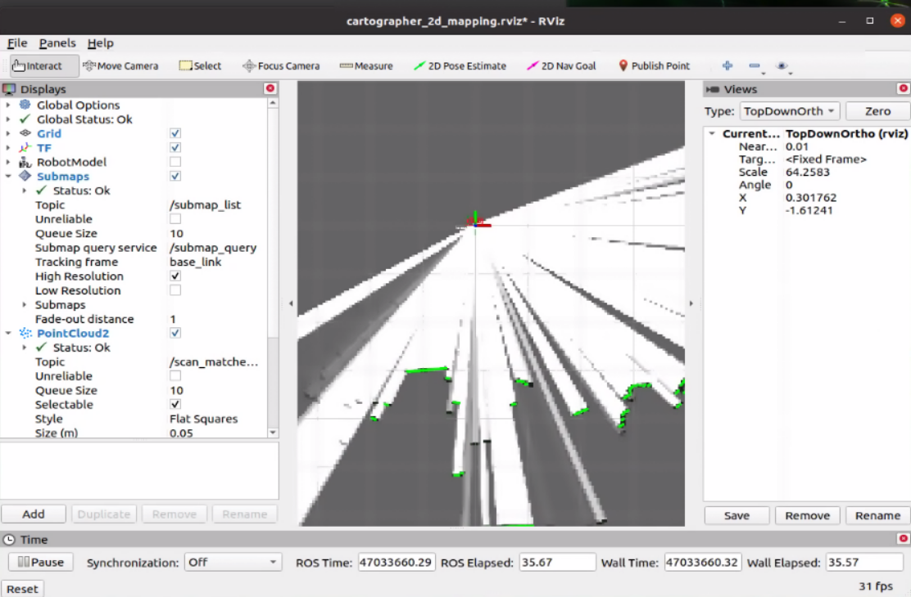
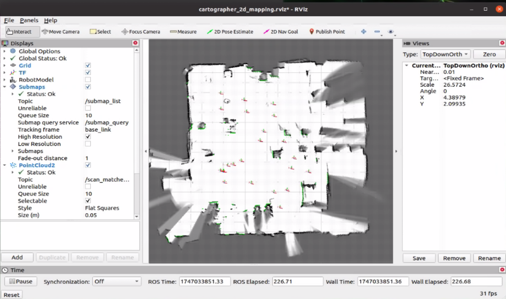
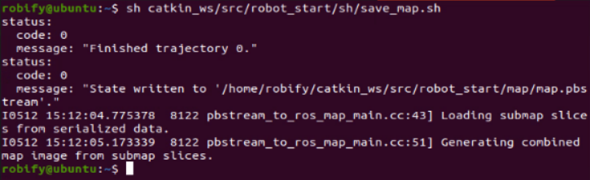
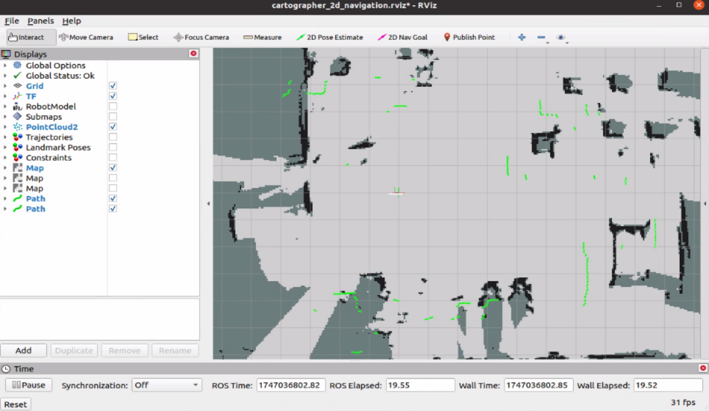
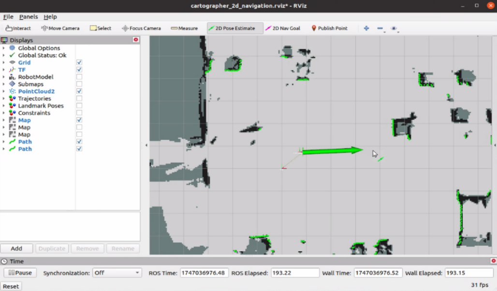
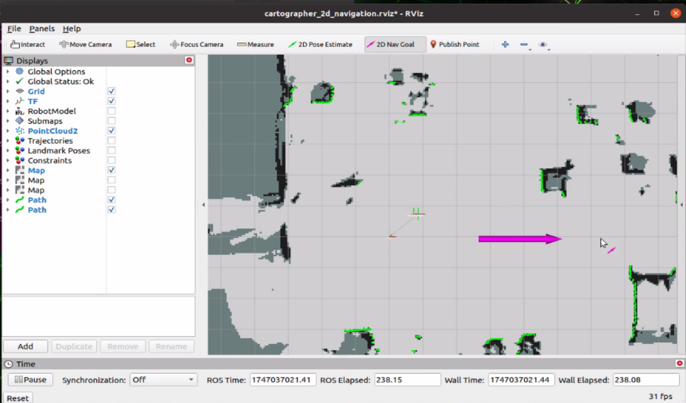

🧭 Cartographer 2D Mapping and Navigation
RobiS supports the Cartographer SLAM algorithm developed by Google, in addition to Karto, GMapping, and Hector SLAM. Cartographer offers higher mapping accuracy and integrated localization, but it requires more computational power.
🗺️ Cartographer 2D Mapping
🚀 Launch Cartographer SLAM
After activating the chassis, LiDAR, and IMU drivers, begin Cartographer mapping with:
roslaunch robot_start carto_2d_mapping.launch

🖥️ Visualize in RViz
Open RViz to observe mapping progress:
- White = explored areas
- Gray = unknown regions
- Black = walls or obstacles

Navigate the robot through the environment using the remote control to build a detailed map.
💾 Save the Map
Note: Cartographer mapping stops once a map is saved (unlike GMapping or Karto which allow continuation). To save the map:
sh ~/catkin_ws/src/robot_start/sh/save_map.sh
The map files are stored in:
~/catkin_ws/src/robot_start/map/
Files are named map.* (e.g., map.pgm, map.yaml), and can be backed up or reused.

🧭 Cartographer Navigation
After saving the map, you can use it for navigation using Cartographer’s built-in localization.
🚀 Launch Navigation with Cartographer SLAM
Start Cartographer navigation using:
roslaunch robot_start teb_navigation_slam.launch

This uses the move_base package for planning, but relies on Cartographer for localization (instead of AMCL).
🧭 Set Initial Pose in RViz
- Click
2D Pose Estimatein RViz. - Click and drag on the map where the robot starts, matching its real-world position and heading.
- The LiDAR scan should overlap well with map features.

🎯 Set a Navigation Goal
- Use
2D Nav Goalin RViz. - Click and drag to set a goal location and heading.
- The robot will follow the path using TEB local planning and avoid obstacles dynamically.

⚙️ Navigation Parameter Files
Parameters for move_base and Cartographer navigation are located in:
~/catkin_ws/src/robot_start/param/
| File Name | Purpose |
|---|---|
costmap_common_params.yaml |
Base configuration for costmaps |
global_planner_params.yaml |
Dijkstra-based global path planner |
local_costmap_params.yaml |
Settings for local obstacle avoidance |
move_base_params.yaml |
Recovery behaviors and planners |
teb_local_planner.yaml |
TEB local planner configuration |
dwa_local_planner.yaml |
Alternative DWA planner config |
🛠️ Adjust these configs for performance, speed, or safety constraints based on your environment and platform.
Once configured, Cartographer-based navigation can deliver precise, stable motion through complex mapped environments.